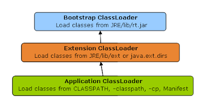
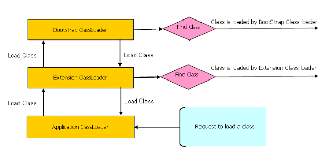

Java类加载器的作用就是在运行时加载类。Java类加载器基于三个机制：委托、可见性和
单一性。委托机制是指将加载一个类的请求交给父类加载器，如果这个父类加载器不能够
找到或者加载这个类，那么再加载它。可见性的原理是子类的加载器可以看见所有的父类
加载器加载的类，而父类加载器看不到子类加载器加载的类。单一性原理是指仅加载一个类
一次，这是由委托机制确保子类加载器不会再次加载父类加载器加载过的类。正确理解类
加载器能够帮你解决NoClassDefFoundError和java.lang.ClassNotFoundException，
因为它们和类的加载相关。类加载器通常也是比较高级的Java面试中的重要考题，Java
类加载器和工作原理以及classpath如何运作的经常被问到。Java面试题中也经常出现“一个
类是否能被两个不同类加载器加载”这样的问题。这篇教程中，我们将学到类加载器是什么
，它的工作原理以及一些关于类加载器的知识点。
类加载器是一个用来加载类文件的类。Java源代码通过javac编译器编译成类文件。然后 JVM来执行类文件中的字节码来执行程序。类加载器负责加载文件系统、网络或其他来源的 类文件。有三种默认使用的类加载器：Bootstrap类加载器、Extension类加载器和System类 加载器（或者叫作Application类加载器）。每种类加载器都有设定好从哪里加载类。
rt.jar中的JDK类文件，它是所有类加载器的父加载器。 Bootstrap类加载器没有任何父类加载器，如果你调用String.class.getClassLoader() ，会返回null，任何基于此的代码会抛出NUllPointerException异常。Bootstrap 加载器被称为初始类加载器。
jre/lib/ext目录下或者java.ext.dirs系统属性定义的目录下加载类。 Extension加载器由sun.misc.Launcher$ExtClassLoader实现。
System类加载器（又叫作Application类加载器）了。它负责 从classpath环境变量中加载某些应用相关的类，classpath环境变量通常由-classpath或 -cp命令行选项来定义，或者是JAR中的Manifest的classpath属性。Application类 加载器是Extension类加载器的子加载器。通过sun.misc.Launcher$AppClassLoader 实现。
除了Bootstrap类加载器是大部分由C来写的，其他的类加载器都是通过
java.lang.ClassLoader来实现的。
总结一下，下面是三种类加载器加载类文件的地方：
JRE/lib/rt.jar
JRE/lib/ext或者java.ext.dirs指向的目录
CLASSPATH环境变量, 由-classpath或-cp选项定义,或者是JAR中的Manifest的classpath属性定义.

我之前已经提到过了，类加载器的工作原理基于三个机制：委托、可见性和单一性。这一节 ，我们来详细看看这些规则，并用一个实例来理解工作原理。下面显示的是类加载器使用 委托机制的工作原理。
当一个类加载和初始化的时候，类仅在有需要加载的时候被加载。假设你有一个应用需要的
类叫作Abc.class，首先加载这个类的请求由Application类加载器委托给它的父类
加载器Extension类加载器，然后再委托给Bootstrap类加载器。Bootstrap类加载器
会先看看rt.jar中有没有这个类，因为并没有这个类，所以这个请求由回到Extension类
加载器，它会查看jre/lib/ext目录下有没有这个类，如果这个类被Extension类加载器
找到了，那么它将被加载，而Application类加载器不会加载这个类；而如果这个类没有被
Extension类加载器找到，那么再由Application类加载器从classpath中寻找。记住
classpath定义的是类文件的加载目录，而PATH是定义的是可执行程序如javac，java等
的执行路径。

根据可见性机制，子类加载器可以看到父类加载器加载的类，而反之则不行。所以下面的
例子中，当Abc.class已经被Application类加载器加载过了，然后如果想要使用
Extension类加载器加载这个类，将会抛出java.lang.ClassNotFoundException异常。
package test;
import java.util.logging.Level;
import java.util.logging.Logger;
/**
* Java program to demonstrate How ClassLoader works in Java,
* in particular about visibility principle of ClassLoader.
*
* @author Javin Paul
*/
public class ClassLoaderTest {
public static void main(String args[]) {
try {
//printing ClassLoader of this class
System.out.println("ClassLoaderTest.getClass().getClassLoader() : "
+ ClassLoaderTest.class.getClassLoader());
//trying to explicitly load this class again using Extension class loader
Class.forName("test.ClassLoaderTest", true
, ClassLoaderTest.class.getClassLoader().getParent());
} catch (ClassNotFoundException ex) {
Logger.getLogger(ClassLoaderTest.class.getName()).log(Level.SEVERE, null,
ex);
}
}
}
输出：
ClassLoaderTest.getClass().getClassLoader() : sun.misc.Launcher$AppClassLoader@601bb1
16/08/2012 2:43:48 AM test.ClassLoaderTest main
SEVERE: null
java.lang.ClassNotFoundException: test.ClassLoaderTest
at java.net.URLClassLoader$1.run(URLClassLoader.java:202)
at java.security.AccessController.doPrivileged(Native Method)
at java.net.URLClassLoader.findClass(URLClassLoader.java:190)
at sun.misc.Launcher$ExtClassLoader.findClass(Launcher.java:229)
at java.lang.ClassLoader.loadClass(ClassLoader.java:306)
at java.lang.ClassLoader.loadClass(ClassLoader.java:247)
at java.lang.Class.forName0(Native Method)
at java.lang.Class.forName(Class.java:247)
at test.ClassLoaderTest.main(ClassLoaderTest.java:29)
根据这个机制，父加载器加载过的类不能被子加载器加载第二次。虽然重写违反委托和 单一性机制的类加载器是可能的，但这样做并不可取。你写自己的类加载器的时候应该严格 遵守这三条机制。
Java提供了显式加载类的API：
Class.forName(classname)
Class.forName(classname, initialized, classloader)
就像上面的例子中，你可以指定类加载器的名称以及要加载的类的名称。类的加载是通过
调用java.lang.ClassLoader的loadClass()方法，而loadClass()方法则调用了
findClass()方法来定位相应类的字节码。在这个例子中Extension类加载器使用了
java.net.URLClassLoader，它从JAR和目录中进行查找类文件，所有以/结尾的查找
路径被认为是目录。如果findClass()没有找到那么它会抛出
java.lang.ClassNotFoundException异常，而如果找到的话则会调用defineClass()将
字节码转化成类实例，然后返回。
类加载器是个很强大的概念，很多地方被运用。最经典的例子就是AppletClassLoader，
它被用来加载Applet使用的类，而Applets大部分是在网上使用，而非本地的操作系统使用
。使用不同的类加载器，你可以从不同的源地址加载同一个类，它们被视为不同的类。J2EE
使用多个类加载器加载不同地方的类，例如WAR文件由Web-app类加载器加载，而
EJB-JAR中的类由另外的类加载器加载。有些服务器也支持热部署，这也由类加载器实现
。你也可以使用类加载器来加载数据库或者其他持久层的数据。
以上是关于类加载器的工作原理。我们已经知道了委托、可见性以及单一性原理，这些对于 调试类加载器相关问题时至关重要。这些对于Java程序员和架构师来说都是必不可少的知识 。